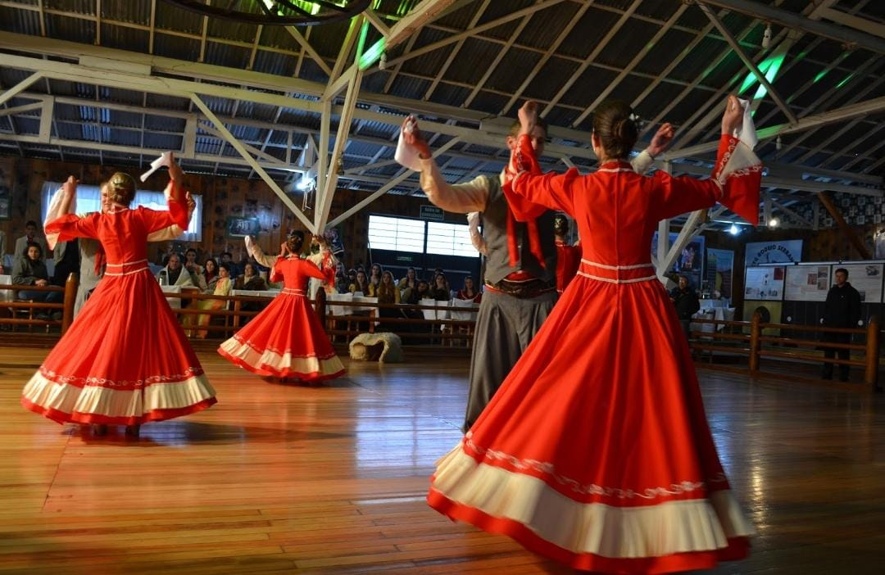
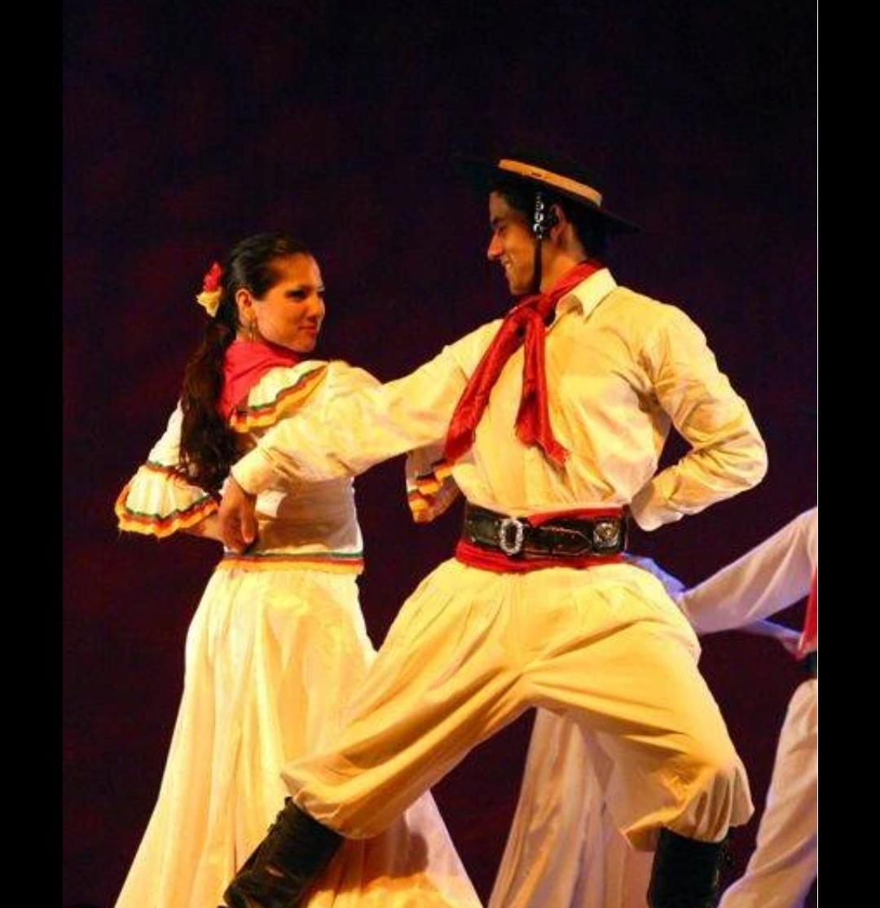

Meus Projetos

Dança Do Bugio
É uma expressão cultural típica do Rio Grande do Sul, principalmente das regiões serranas e missioneiras. Ela faz parte do folclore gaúcho e está ligada à tradição das músicas e danças de fandango.

O fandango gaúcho
É uma dança tradicional do Rio Grande do Sul, ligada à cultura dos povos do campo e muito presente nos bailes e festividades gaúchas.

A vaneira
É uma das danças mais conhecidas e animadas do Rio Grande do Sul, muito presente nos fandangos e bailes gaúchos.